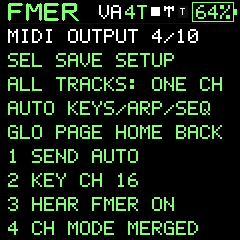
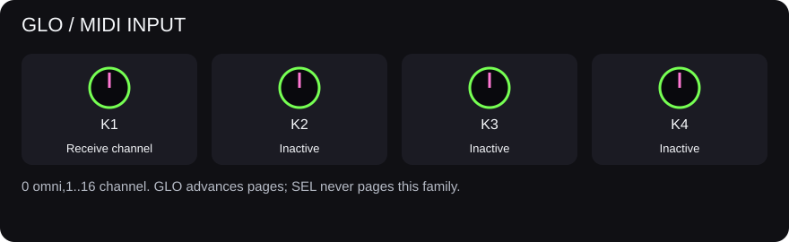
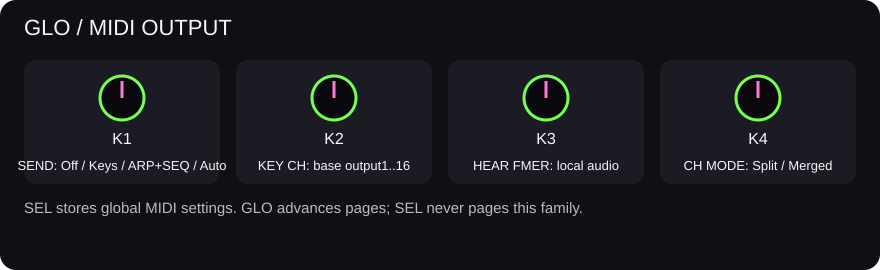
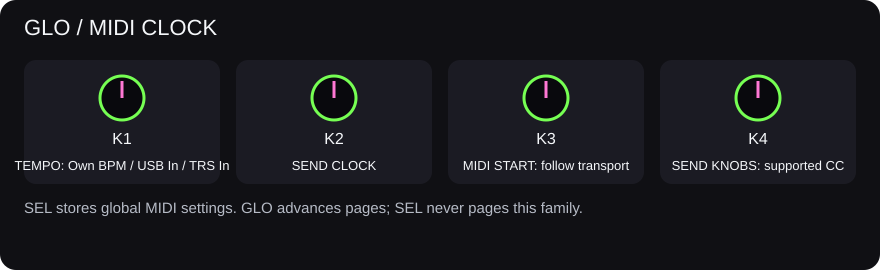

Connections
MIDI, clocks and recording to a DAW
Fixed CC map, all198 parameter IDs, MIDI Learn limitations, exact SysEx examples, patch selection and DAW workflows.
Are parameter IDs MIDI CC numbers?
No. Firmware 735 has 198 fixed canonical parameter IDs (0 through 197). These are FMER addresses used by its panel, companion and exact USB SysEx protocol. They are not automatically CCs or NRPNs. For example, shared filter cutoff is parameter 162, controlled by CC74 in SINGLE mode; shared filter resonance is parameter 146 and has no fixed CC. CC71 controls a different parameter: VA voice resonance (163).
The complete parameter table gives each ID, legal range, meaning, menu location and any CC shortcut. IDs0 through144 retain the FM voice compatibility order: OP6 first, OP1 last. The current IDs145 through159 are assigned controls, not unused slots; older protocol notes describing them as reserved do not apply to734. Treat this as a versioned interface: new firmware may extend capabilities or ranges, so check its reference rather than assuming an older map is complete.
Is there a MIDI Learn mode?
No built-in MIDI Learn or saved custom CC assignments exist in734, either on the instrument or in the companion. The fixed CC numbers below cannot be reassigned in FMER. NRPN/RPN control is not implemented. A controller's own editor can assign its knobs to FMER's fixed CCs. A DAW or external MIDI processor may translate other controls into those CCs or supported USB SysEx; that mapping lives in the external software, not in FMER.
Use an external controller to play and automate FMER
- For a computer, choose PC/NORMAL on GLO / USB LINK, connect USB and enable FMER as a MIDI output destination in your software. A class-compliant controller needs a suitable host; a cable alone does not make every controller a USB host. TRS supports musical MIDI input, not output. The companion's exact editor protocol is USB-only.
- Set GLO / MIDI INPUT to Omni or the channel your controller sends. In4TRK mode, incoming channels1,2,3,4 address tracks1,2,3,4; use Omni to control all four. The outgoing KEY CH setting does not change those incoming track assignments.
- Assign absolute knobs with values0 through127: CC74 cutoff, CC71 VA resonance, CC73 attack, CC72 release, CC12 delay, CC91 reverb, CC93 chorus and CC95 phaser. Relative encoder formats are not decoded as increments; use the controller's absolute mode or an external translator.
- Test with a held note, then a newly played note. Some instrument edits take effect through voice configuration/new notes; a changed number does not guarantee a sustained voice will morph. Shared effects affect the common bus.
- Record these CC messages into a MIDI clip for automation and route playback back to FMER. SEND KNOBS is not needed for incoming control. Save the instrument or project explicitly if you want the edited state after power-off; sending a CC does not write a preset bank.
CC values are7-bit absolute values, not the displayed engineering units. For shared FX amount,0 means0%,64 means50%,127 means100%. Single-mode attack/release use floor(value x10000/127) milliseconds. Cutoff is logarithmic: CC74=0 means20Hz and127 means20000Hz in SINGLE, or18000Hz for the addressed VA part in4TRK. Do not send the number1000 as a CC value to request1000Hz: use SysEx for exact Hz. CC7/channel volume and CC11/expression are performance controls, not the stored mixer-fader parameter157.
Use FMER knobs to control a DAW
- On GLO / MIDI CLOCK, turn SEND KNOBS on. Set the base output channel on GLO / MIDI OUTPUT and press SEL to retain the MIDI setup.
- In your DAW, enable its MIDI mapping/remote input for FMER. Activate the DAW's Learn function, choose a software control and move an FMER control that changes one of the eight mapped parameters above. Exit Learn and test. This is the DAW's Learn feature; FMER is sending its fixed CC.
- In4TRK, the four tone CCs use the selected track's split/merged output channel. The four shared FX amount CCs use the base channel. Layer changes on the mixer do not create new CC mappings.
- Avoid an unintended return route to FMER. Incoming CCs are not echoed, but an external feedback loop or duplicated note routing can still make the setup confusing.
Moving an FM operator, algorithm, mixer fader, mute, solo, tempo or another unmapped control does not emit a corresponding automatic CC. Manual preset browsing does not emit Bank Select/Program Change. A generic DAW Learn button cannot discover an ID for a control that sends no MIDI message.
GLO / MIDI INPUT selects Omni or an input channel. GLO / MIDI OUTPUT uses K1 for route (0 Off, 1 Keys, 2 Seq/Arp, 3 Auto), K2 for the base channel, K3 for local sound and K4 for split/merged routing (0 Split, 1 Merged). Stored channel 0 is musical channel 1. Split sends sequencer tracks on base channel plus track offset (wrapping after channel16); merged uses one channel.
GLO / MIDI CLOCK selects source (0 Internal, 1 USB, 2 TRS input), clock output, transport receive and parameter CC send. SEL persists MIDI settings. Supported parameter CC output is scoped to the implemented mappings, including 71–74; it is not an automatic mapping of every control. Incoming pitch bend, sustain and note ownership are handled by the musical engine; stop/panic releases owned notes.
Record four MIDI parts in Ableton
- Set output to Seq/Arp or Auto, base channel 1 and Split.
- Create four DAW MIDI tracks listening to FMER channels 1, 2, 3 and 4.
- Choose one clock master. For an external master, enable FMER transport receive and select the correct clock source.
- Arm the DAW tracks and send Start. Check each part before a long take.
- For one combined MIDI recording, use Merged or listen to all channels on one DAW track.
Local sound can be disabled when FMER is controlling an external synthesizer. Avoid routing outgoing MIDI straight back to the unit unless the DAW routing is intentional. A clock-loss guard prevents a missing external clock from leaving an uncontrolled transport.
USB audio is the combined mono master duplicated into the advertised stereo capture stream. Four separate audio stems are not available. Record parts separately if you need isolated audio. Long USB recording reliability still has an open underrun issue; verify a take before relying on it. The qualified TRS port is input-only.
GLO page 4: MIDI OUTPUT
- K1 SEND: Off (0), physical Keys (1), generated ARP/SEQ notes (2), or Auto (3), which selects played keys or generated notes according to the current mode. Incoming MIDI is not echoed.
- K2 KEY CH: the base output channel, displayed 1 through 16 (stored 0 through 15).
- K3 HEAR FMER: On (1) enables the local instrument; Off (0) lets the unit control another instrument silently.
- K4 CH MODE: Split (0) sends four sequencer tracks on base channel plus offsets0,1,2,3 (base1 gives channels1 through 4); Merged (1) sends them on the selected base channel.
GLO page 5: MIDI CLOCK
- K1 TEMPO: Own BPM (0), USB In (1), or TRS In (2).
- K2 SEND CLOCK: sends FMER clock/transport to USB MIDI when enabled.
- K3 MIDI START: follow incoming Start/Stop when on; ignore transport messages when off. Clock source is chosen independently.
- K4 SEND KNOBS: sends the supported tone controls as MIDI CC when on.
These settings apply globally. Changes take effect immediately; SEL saves them for the next power-on. GLO advances pages and HOME returns. The page explains the active routing or clock choice above the four controls.
Switch patches from a DAW or controller
Send CC0 (Bank MSB), CC32=0 (Bank LSB), then Program Change on the intended channel. Bank0 selects the64 Bank A sounds; Bank1 selects Bank B. Program values are0 through 63; software displaying1 through 128 calls these programs1 through 64. Existing Program Change with no Bank Select still selects Bank A after boot. Bank selection is remembered independently for every receive channel and USB/TRS source until reboot or another Bank Select.
Bank A program IDs are stable: FM slots0 through 7 use programs0 through 7; FM slots8 through 31 use programs16 through 39. VA slots0 through 7 use programs8 through 15; VA slots8 through 31 use programs40 through 63. Bank B programs0 through 63 map directly to Bank B slots0 through 63. Names and engine can change when you overwrite a slot.
In single-instrument mode, the accepted channel selects the live instrument. In four-track mode, channels1 through 4 select tracks1 through 4, including tracks not currently selected on screen. Set input to Omni for all four. Unsupported banks, nonzero LSB, programs64 through 127 and empty User slots leave the instrument unchanged. Patch selection reads the cached bank; it does not write flash, load a project, replace the live shared FX or restart the sequence. It can retrigger/release the affected voice; seamless held-note morphing is not promised.
Example: on channel3, send B2 00 01, B2 20 00, C2 05 (hex) to select Bank B slot5 on track3. To return to Bank A, send bank MSB0, LSB0 and the desired program. Incoming Program Change is not echoed; manual patch browsing does not transmit Program Change in734.
Implemented MIDI control map
| Message | Input behavior | Output |
|---|---|---|
| Notes / velocity / pitch bend | Channel-filtered synth control; bend is14-bit | Keys and generated notes per SEND; no incoming echo or panel bend output |
| CC1 /7 /11 /64 | Mod wheel / channel volume / expression / sustain | Not automatically emitted |
| CC71 | VA voice resonance0 through 95%; not the shared FX filter resonance | SEND KNOBS |
| CC72 /73 | Voice release / attack,0 through 10000ms | SEND KNOBS |
| CC74 | Single: shared cutoff20 through 20000Hz; four-track: addressed VA voice cutoff20 through 18000Hz; logarithmic | SEND KNOBS; split track controls on base channel plus selected track offset |
| CC12 /91 /93 /95 | Shared delay / reverb / chorus / phaser amount0 through 100%; affects the shared bus, not individual track sends | SEND KNOBS, base channel |
| CC120 /121 /123 | All Sound Off / reset supported performance controllers / All Notes Off; sustain semantics apply | Recovery termination when required; not a generic panel mapping |
| Clock / Start / Continue / Stop / SPP | Chosen USB or TRS clock source; transport receive must be enabled for transport and song position | Internal clock and Start/Continue/Stop when SEND CLOCK is on; SPP output absent |
| FMER SysEx | All198 canonical parameters with exact integer ranges; separate native/project/FX-routing and guarded storage operations | Requested state/status replies; not generic CC automation |
CC amount input uses floor(value x100/127); the exact resulting percentage appears on FMER. 7-bit CC cannot provide exact precision across every frequency/time value; use companion SysEx for that. CC receive does not echo CC output. Poly/channel pressure, NRPN/RPN, MIDI2, BLE and automatic Program Change output are not implemented. Standard Bank Select and effect control naming follow the MIDI Association table; CC12 is FMER's documented delay-amount assignment.
Advanced: edit any canonical parameter by USB SysEx
Use the companion for ordinary editing and verified transfers. Custom controllers/scripts can use the following FMER-specific messages on a verified FM-1_734 connection. They are not stock firmware commands. This experimental protocol uses manufacturer byte7D and the ASCII namespace FMER. It is not a MIDI channel message: in4TRK, voice controls edit the currently selected track; shared controls edit shared state. Changing the MIDI channel does not retarget this SysEx. Keep selection stable while editing; do not run competing editor/automation writers.
All examples below are hexadecimal bytes, including F0 and F7. If a MIDI tool supplies those delimiters itself, enter only the enclosed bytes. Decimal IDs/values are packed least-significant7-bit group first:
Set: F0 7D 46 4D 45 52 07 id0 id1 value0 value1 value2 F7
id0 = ID & 127; id1 = (ID >> 7) & 127
value0 = value & 127
value1 = (value >> 7) & 127
value2 = (value >> 14) & 127
Read: F0 7D 46 4D 45 52 06 id0 id1 F7| Operation | Exact complete message (hex) |
|---|---|
| Set shared cutoff ID162 to1000Hz | F0 7D 46 4D 45 52 07 22 01 68 07 00 F7 |
| Set shared resonance ID146 to60% | F0 7D 46 4D 45 52 07 12 01 3C 00 00 F7 |
| Set FM algorithm ID134 to raw4 (displayed algorithm5) | F0 7D 46 4D 45 52 07 06 01 04 00 00 F7 |
| Read controls starting at ID162 | F0 7D 46 4D 45 52 06 22 01 F7 |
Read operation06 returns the same prefix/opcode followed by ASCII decimal text start count values..., then F7. It returns up to24 consecutive controls, not just the requested one. For ID162 on734, start is162 and count is24; the first value is cutoff. Do not decode those reply characters as binary7-bit integers.
A matching set-message echo means the edit was queued, not that the audio engine has applied it. A robust client waits for operation08 controls_generation and controls_applied to match, then reads the value back. Use bounded timeouts, serialize requests and retain errors; invalid values or busy publication can receive no success echo. Do not flood the control queue at audio rate. The198-value scan spans multiple replies: compare generation and performance revision before/after, or use a frozen native export for a complete consistent project backup.
Use each parameter's canonical range and legal choices. In particular, ARP rate ID181 permits only1,2,4,8,16,32; raw FM algorithm values are0 through31; parameter193 is receive channel0=Omni or1 through16. A byte-level encoding does not override these rules. Controls may have musical side effects such as mode changes, note release or edits to the selected pattern. Save deliberately after auditioning.
What does not fit into a parameter ID?
The198 IDs cover the canonical working controls, not every field in the instrument. Full pattern contents, song rows, mixer solo/FX masks, FX order, chorus/phaser recipe selection, global MIDI settings and bank/project storage use separate native records or commands. ID154 selects a track and ID157 edits its stored level; they are not automatically CC154/157. CC numbers stop at127. Use the companion's supported editor and transfer operations for complete state; a list of parameter values alone is not a complete backup.
Parameter edits are live RAM changes. They neither rename nor overwrite a saved slot automatically. Use SAVE on the unit or the companion's explicit device save workflow to retain changes. Recalling a patch/project can replace relevant live values. Bluetooth MIDI and MIDI Learn remain deferred/unimplemented; this guide adds no new firmware behavior.
If MIDI control does not work
- Notes work but a knob does not: check fixed CC assignment, absolute mode, channel and engine; CC71 is VA resonance, not the shared FX resonance.
- The wrong track changes: four-track input uses channels1 through4; outgoing base/split settings are separate. Exact SysEx edits selected context instead of a channel-addressed part.
- A software Learn box sees nothing: enable SEND KNOBS and move a mapped parameter, not an arbitrary knob/page action.
- Exact frequency is unavailable: a7-bit CC has128 values. Use the exact SysEx control, not NRPN.
- The companion cannot open MIDI: close other software that holds the same port before connecting the companion. Do not interrupt a firmware or storage transfer.
- No tone despite changing values: check Local/HEAR FMER, track mute/solo/level, shared master and instrument mode; test ordinary notes before debugging automation.





